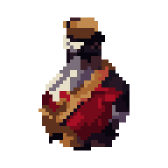
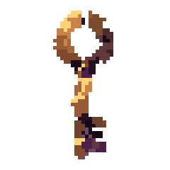
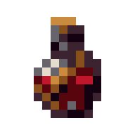
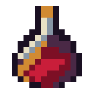

Exact-grid authoring · offline proof
Craft the grid.
Prove every cell.
A Codex skill for building, repairing, comparing, and validating pixel art without hiding judgment behind a score.

8–128authored grid sizes
RGBAexact cell parity
0runtime requests
3blind directions
Shipped fixtures
Small grids expose weak decisions.
The automatic recovery keeps the source legible. The authored repair spends its limited cells on a clearer bottle, shoulder, highlight, and red mass.
Recover → read at 1× → repair exact cells → promote with review.
Inspect every fixture ↗

